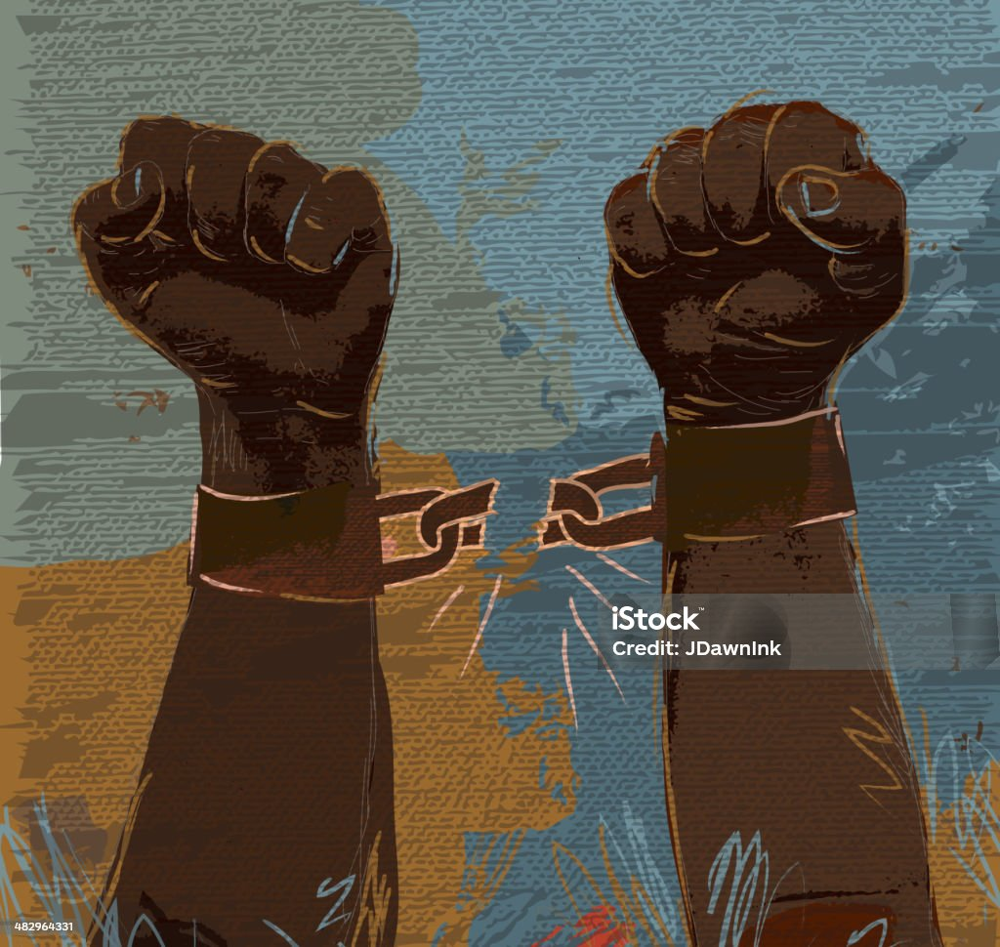
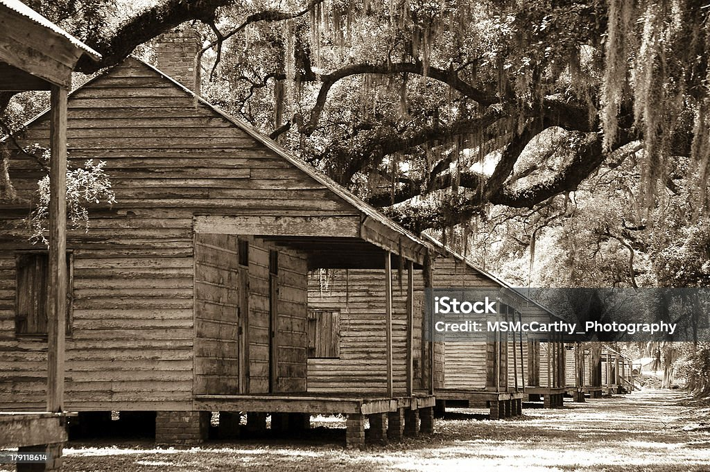
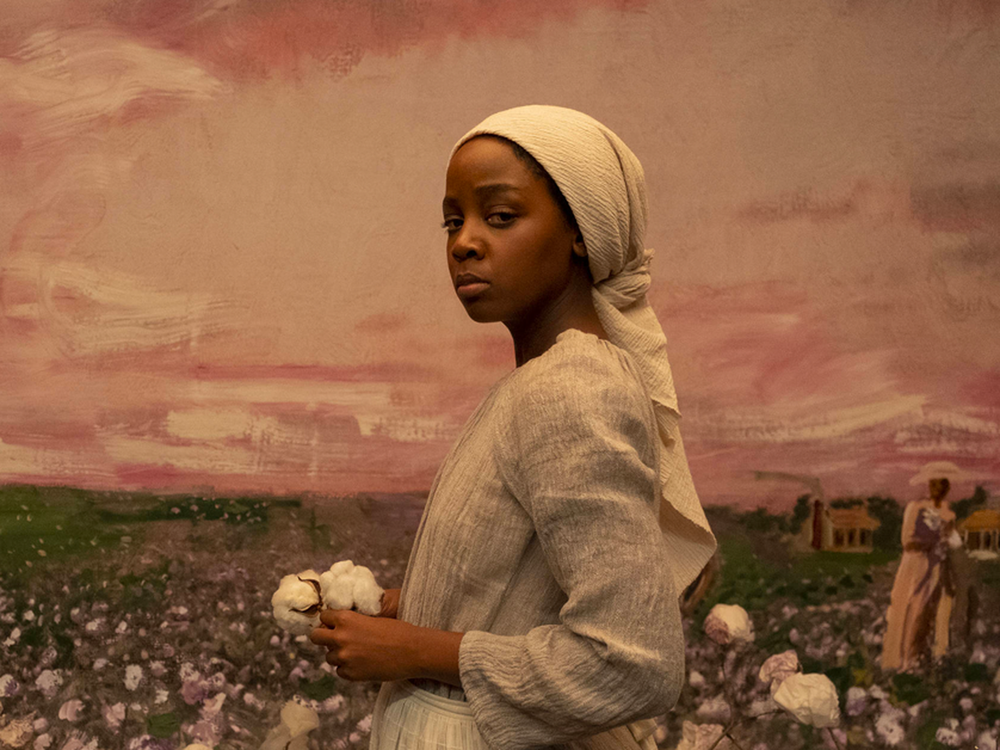

A mű az amerikai rabszolgatartás borzalmait mutatja be egy szökött rabszolga nagyon közeli nézőpontjából. Először is rendhagyó a könyv Amerika ábrázolása, ez nem egy Tamás bátyja kunyhója típusú Amerika, ahol a hit legyőz mindent, inkább egy sokkal istentelenebb kegyetlen világ, ahol egyedül a változás és a folyamatos bizonytalanság van jelen főhősünknek. A rabszolgákat korbácsolják, felakasztják. A fehér ember kegyetlenségei a könyv során nagyon tisztán jelennek meg, tabudöntögető stílusban. Sokkal kevesebben, de vannak a vasutat működtető jótevők is, akik az életükkel játszanak, amikor rabszolgákat bújtatnak. Főhősünk Cora, egy fiatal rabszolgalány anyja szökéséből erőt merítve egy “föld alatti vasút” nevű rabszolgák északra jutását segítő hálózatra talál rá, és ebben látja szabadulását. Azonban útja során sokszor kerül életveszélybe, izgalmas helyzetekbe. Azt hihetné az olvasó, hogy majd lesz egy hely ahová megérkezik, és szabad lesz. Ezt többször el is játssza a szerző, hogy olyan helyekre kalauzolja hősünket, ahol tanulhat írni olvasni, barátokat szerezhet és kiteljesítheti és bepótoljatja hiányzó műveltségét. Azonban vérdíj van a fején, és egykori fogvatartói karmai messze nyúlnak, emiatt menekülnie kell. A regény erőssége, hogy egyetlen állandó szereplője a szökött lány, aki egyáltalán nincsen felruházva különleges képességekkel, ami nagyon valóságos érzetet kölcsönöz a könyvnek. Ehhez a valóságossághoz hozzá tartozik még a történet kiszámíthatatlansága, az emberi kegyetlenség, és jóság. Nincsenek drámai fordulatok, csak a küzdés van a rendszer ellen. Gyengesége, hogy történelmileg nem hiteles a vasúttal kapcsolatban. Nem értem, hogy ezt a titkos hálózatot miért kellett szóról szóra értelmezni, és Corát igazi föld alatt futó vasutakon, alagutakon végigvonszolni. Merthogy a vasút csak elnevezés, ami jelképesen értendő. Összegezve melegen ajánlom a könyvet annak, aki szeretné megismerni az amerikai rabszolgatartás sötét múltját, melynek kegyetlenségei itt le vannak írva, és nincsenek ferdítések. A könyv egy igazi leírása a sokat elhallgatott ingyen munkaerőnek, az újkori amerikai rabszolgáknak és sanyarú sorsuknak. A könyvből 2021-ben sorozat is készült “The Underground Railroad” címen.
